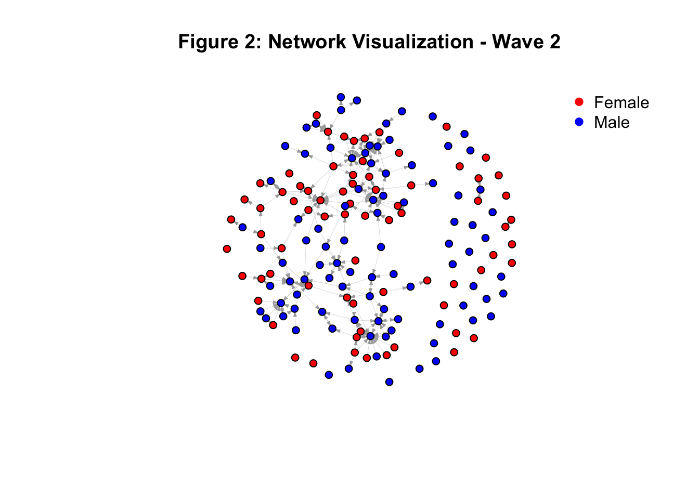

Descriptives
Below, I have provided several descriptive statistics to give a quick
overview of the data, helping us understand what we are dealing with.
First, the code to prepare the data is shown, followed by the code for
the descriptives, along with some tables and figures. As mentioned
previously, there are two waves in the data, with the total number of
scholars in the dataset varying per wave. The overall dataset includes
164 scholars.
However, as seen in ‘1.2 Distribution of Scholars’, Wave 1 consists of
just 152 unique scholars. The University of Groningen has the most
scholars in the dataset with 61, followed by Utrecht University with 47,
and Radboud University with 44 scholars. There are twelve scholars who
were not yet present in Wave 1 but are included in the overall dataset.
These are mostly PhD candidates or employees who were not yet working at
one of the three universities at that time but joined between 2022 and
2024. In two cases, these were scholars who previously worked at the
University of Amsterdam and joined one of the three universities in Wave
2. Wave 2 consists of 141 unique scholars, again with the University of
Groningen having the most scholars at 62, followed by Utrecht University
with 40 and Radboud University with 39. There are 21 scholars no longer
in the dataset in Wave 2. In most cases, these were PhD students who
likely completed their PhD. Other cases include guest researchers or
postdocs who are simply no longer employed. Two scholars previously
worked at one of the three universities but were now affiliated with
either the University of Cologne or Tilburg University.
In terms of prestige across universities, the prestige appears to be
somewhat equal, ranging between 4 and 5.5 for both waves. The lowest
prestige score observed is 0, at both the University of Groningen and
Utrecht University, primarily among junior scholars who have not
published much yet. The highest prestige index observed is 36.5 at
Utrecht University. The total prestige per wave remains stable, as it is
a fixed variable across waves. The histograms show a few outliers
regarding the prestige index: most scholars have a prestige index
between 1 and 4, with only 18 scholars having a score above 10. One
scholar has a score of 18, another 21, and one stands out with a score
of 36. The same trend is observed for Wave 2, with changes largely due
to scholars no longer working at one of the universities, thus their
scores are not included in the histogram. The mean prestige has
increased by only 0.059 between the two waves, as shown in the summary
statistics.
Regarding gender, only Radboud University is perfectly balanced in
Wave 1, with an equal number of men and women (22 each). At the
University of Groningen and Utrecht University, men (34 and 27)
outnumber women (27 and 20), respectively. In Wave 2, these proportions
shift slightly, with more women than men at Radboud University, but
still more men at the other two universities.
Finally, Figure 1 shows the network at Wave 1, with isolates still
included. It is evident that there are many scholars in the data who do
not have connections with others in the dataset. It may be the case that
these isolates collaborate mostly with scholars from other universities
or from other departments not included in the original dataset or in
this study. Figure 2 shows the network at Wave 2, again with isolates
included. We can immediately observe that the number of isolates has
decreased and that more ties have been established. Especially in Wave
2, it stands out that are a few scholars that receive considerably more
ties than others.
Figure 3 displays the same network as Wave 1, but without isolates. As
with Figure 1, the collaboration network seems rather sparse, with just
a few scholars receiving multiple ties. Figure 4 shows the same network
as wave 2, but without isolates. The network appears to be denser than
the network at Wave 1. Here it also becomes clear there are a few
scholars who receive more ties than others. In the next section, it will
be investigated whether prestige plays a role in this observation.
—-
Prep
Cleaning the workspace
rm(list = ls())
Defining the functions
fpackage.check <- function(packages) {
lapply(packages, FUN = function(x) {
if (!require(x, character.only = TRUE)) {
install.packages(x, dependencies = TRUE)
library(x, character.only = TRUE)
}
})
}
fsave <- function(x, file = NULL, location = "./data/processed/") {
ifelse(!dir.exists("data"), dir.create("data"), FALSE)
ifelse(!dir.exists("data/processed"), dir.create("data/processed"), FALSE)
if (is.null(file))
file = deparse(substitute(x))
totalname <- paste(location, file, ".rda", sep = "")
save(x, file = totalname)
}
fload <- function(filename) {
load(filename)
get(ls()[ls() != "filename"])
}
fshowdf <- function(x, ...) {
knitr::kable(x, digits = 2, "html", ...) %>%
kableExtra::kable_styling(bootstrap_options = c("striped", "hover")) %>%
kableExtra::scroll_box(width = "100%", height = "300px")
}
Loading packages
packages <- c("tidyverse", "scholar", "openalexR", "rvest", "jsonlite", "RSiena", "RSelenium", "rvest",
"lavaan", "xml2", "kableExtra", "devtools", "igraph", "network", "sna", "ggraph", "visNetwork", "threejs",
"networkD3", "RsienaTwoStep", "dplyr")
fpackage.check(packages)
#> [[1]]
#> NULL
#>
#> [[2]]
#> NULL
#>
#> [[3]]
#> NULL
#>
#> [[4]]
#> NULL
#>
#> [[5]]
#> NULL
#>
#> [[6]]
#> NULL
#>
#> [[7]]
#> NULL
#>
#> [[8]]
#> NULL
#>
#> [[9]]
#> NULL
#>
#> [[10]]
#> NULL
#>
#> [[11]]
#> NULL
#>
#> [[12]]
#> NULL
#>
#> [[13]]
#> NULL
#>
#> [[14]]
#> NULL
#>
#> [[15]]
#> NULL
#>
#> [[16]]
#> NULL
#>
#> [[17]]
#> NULL
#>
#> [[18]]
#> NULL
#>
#> [[19]]
#> NULL
#>
#> [[20]]
#> NULL
#>
#> [[21]]
#> NULL
# make yourself known to openAlex
options(openalexR.mailto = "lucan.bovens@home.nl")
# Load final prepared data
df_ego <- fload("./data/processed/df_ego_final.rda")
socdata <- fload("./data/processed/socdata_final.rda")
dfworks <- fload("./data/processed/df_works_final.rda")
final_scholar_ids <- df_ego$au_id # Get final scholar IDs from df_ego
socdata$nets <- socdata$nets[, final_scholar_ids, final_scholar_ids, drop = FALSE]
dim(socdata$nets) # Should be 2 (waves) 164, 164)
#> [1] 2 164 164
Distribution of
scholars
Distribution of
scholars per university for wave 1 and wave 2
university_distribution <- tibble(original_code = c("RU", "UU", "RUG"), University = c("RU", "UU", "RUG"))
df_ego %>%
left_join(university_distribution, by = c(Universiteit1.22 = "original_code")) %>%
count(University) %>%
fshowdf()
|
University
|
n
|
|
RU
|
44
|
|
RUG
|
61
|
|
UU
|
47
|
|
NA
|
12
|
df_ego %>%
left_join(university_distribution, by = c(Universiteit1.24 = "original_code")) %>%
count(University) %>%
fshowdf()
|
University
|
n
|
|
RU
|
39
|
|
RUG
|
62
|
|
UU
|
40
|
|
NA
|
23
|
View(df_ego)
df_ego %>%
count(Universiteit1.22)
#> # A tibble: 5 × 2
#> Universiteit1.22 n
#> <chr> <int>
#> 1 "" 10
#> 2 "RU" 44
#> 3 "RUG" 61
#> 4 "UU" 47
#> 5 "UvA" 2
df_ego %>%
count(Universiteit1.24)
#> # A tibble: 6 × 2
#> Universiteit1.24 n
#> <chr> <int>
#> 1 "" 21
#> 2 "RU" 39
#> 3 "RUG" 62
#> 4 "UU" 40
#> 5 "University of Cologne" 1
#> 6 "UvT" 1
Prestige
Prestige
distribution by university and total wave 1
# Wave 1: Prestige distribution by university and total
df_ego %>%
group_by(Universiteit1.22) %>%
summarise(mean_prestige = mean(prestige_index, na.rm = TRUE), min_prestige = min(prestige_index,
na.rm = TRUE), max_prestige = max(prestige_index, na.rm = TRUE), sd_prestige = sd(prestige_index,
na.rm = TRUE)) %>%
bind_rows(df_ego %>%
summarise(Universiteit1.22 = "Total", mean_prestige = mean(prestige_index, na.rm = TRUE), min_prestige = min(prestige_index,
na.rm = TRUE), max_prestige = max(prestige_index, na.rm = TRUE), sd_prestige = sd(prestige_index,
na.rm = TRUE)))
#> # A tibble: 6 × 5
#> Universiteit1.22 mean_prestige min_prestige max_prestige sd_prestige
#> <chr> <dbl> <dbl> <dbl> <dbl>
#> 1 "" 3.21 1.34 8.44 2.18
#> 2 "RU" 4.09 0.284 14.2 2.90
#> 3 "RUG" 4.85 0 21.5 4.84
#> 4 "UU" 5.33 0 36.5 5.97
#> 5 "UvA" 2.54 2.20 2.89 0.483
#> 6 "Total" 4.66 0 36.5 4.64
Prestige
distribution by university and total wave 2
# Wave 2: Prestige distribution by university and total
df_ego %>%
group_by(Universiteit1.24) %>%
summarise(mean_prestige = mean(prestige_index, na.rm = TRUE), min_prestige = min(prestige_index,
na.rm = TRUE), max_prestige = max(prestige_index, na.rm = TRUE), sd_prestige = sd(prestige_index,
na.rm = TRUE)) %>%
bind_rows(df_ego %>%
summarise(Universiteit1.24 = "Total", mean_prestige = mean(prestige_index, na.rm = TRUE), min_prestige = min(prestige_index,
na.rm = TRUE), max_prestige = max(prestige_index, na.rm = TRUE), sd_prestige = sd(prestige_index,
na.rm = TRUE)))
#> # A tibble: 7 × 5
#> Universiteit1.24 mean_prestige min_prestige max_prestige sd_prestige
#> <chr> <dbl> <dbl> <dbl> <dbl>
#> 1 "" 2.98 0.284 10.7 2.38
#> 2 "RU" 4.36 0.514 14.2 3.00
#> 3 "RUG" 4.83 0 21.5 4.76
#> 4 "UU" 5.31 0 36.5 6.20
#> 5 "University of Cologne" 4.35 4.35 4.35 NA
#> 6 "UvT" 14.6 14.6 14.6 NA
#> 7 "Total" 4.66 0 36.5 4.64
Histogram prestige
distribution wave 1
# Histogram of prestige scores for Wave 1
hist(df_ego$prestige_index[df_ego$Universiteit1.22 %in% c("RU", "UU", "RUG")], breaks = 30, main = "Distribution of Prestige Index - Wave 1",
xlab = "Prestige Index", ylab = "Frequency", col = "lightblue")
Histogram prestige
distribution wave 2
# Histogram of prestige scores for Wave 2
hist(df_ego$prestige_index[df_ego$Universiteit1.24 %in% c("RU", "UU", "RUG")], breaks = 30, main = "Distribution of Prestige Index - Wave 2",
xlab = "Prestige Index", ylab = "Frequency", col = "lightblue")
Summary statistics
of prestige wave 1
summary(df_ego$prestige_index[df_ego$Universiteit1.22 %in% c("RU", "UU", "RUG")])
#> Min. 1st Qu. Median Mean 3rd Qu. Max.
#> 0.000 1.784 3.233 4.779 6.853 36.515
Summary statistics
of prestige wave 2
summary(df_ego$prestige_index[df_ego$Universiteit1.24 %in% c("RU", "UU", "RUG")])
#> Min. 1st Qu. Median Mean 3rd Qu. Max.
#> 0.000 1.846 3.219 4.838 6.853 36.515
Gender
# Wave 1: Gender count per university
table(df_ego$Universiteit1.22, df_ego$genderdich)
#>
#> female male
#> 4 6
#> RU 22 22
#> RUG 27 34
#> UU 20 27
#> UvA 0 2
# Wave 1: Percentage gender per university
prop.table(table(df_ego$Universiteit1.22, df_ego$genderdich), margin = 1)
#>
#> female male
#> 0.4000000 0.6000000
#> RU 0.5000000 0.5000000
#> RUG 0.4426230 0.5573770
#> UU 0.4255319 0.5744681
#> UvA 0.0000000 1.0000000
# Wave 2: Gender count per university
table(df_ego$Universiteit1.24, df_ego$genderdich)
#>
#> female male
#> 9 12
#> RU 20 19
#> RUG 26 36
#> University of Cologne 0 1
#> UU 18 22
#> UvT 0 1
# Wave 2: Percentage gender per university
prop.table(table(df_ego$Universiteit1.24, df_ego$genderdich), margin = 1)
#>
#> female male
#> 0.4285714 0.5714286
#> RU 0.5128205 0.4871795
#> RUG 0.4193548 0.5806452
#> University of Cologne 0.0000000 1.0000000
#> UU 0.4500000 0.5500000
#> UvT 0.0000000 1.0000000
network_wave2 <- igraph::graph_from_adjacency_matrix(
socdata$nets[2,,], # Second wave
mode = "directed",
weighted = NULL,
diag = FALSE
)
degree_wave2 <- igraph::degree(network_wave2, mode = "all") # Calculate degree (in + out)
df_ego$degree_wave2 <- degree_wave2 # Add degree to df_ego
#plot
hist(df_ego$degree_wave2, breaks = 20, main = "Degree Distribution (Wave 2)", xlab = "Degree")
Plotting
#Wave 1
socdata_w1 <- igraph::graph_from_adjacency_matrix(
socdata$nets[1,,], #now, the first wave
mode = c("directed"),
weighted = NULL,
diag = FALSE,
add.rownames = NULL,
add.colnames = NULL
)
plot(socdata_w1,
main = "Figure 1: Network Visualization - Wave 1",
vertex.color = ifelse(df_ego$genderdich == "female", "red", "blue"),
vertex.label = NA,
vertex.size = 5,
edge.width = 0.2,
edge.arrow.size = 0.2)
legend("topright",
legend = c("Female", "Male"),
col = c("red", "blue"),
pch = 21,
pt.cex = 1,
pt.bg = c("red", "blue"),
bty = "n" #
)
#Wave 2
socdata_w2 <- igraph::graph_from_adjacency_matrix(
socdata$nets[2,,], #now, the second wave
mode = c("directed"),
weighted = NULL,
diag = FALSE,
add.rownames = NULL,
add.colnames = NULL
)
plot(socdata_w2,
main = "Figure 2: Network Visualization - Wave 2",
vertex.color = ifelse(df_ego$genderdich == "female", "red", "blue"),
vertex.label = NA,
vertex.size = 5,
edge.width = 0.2,
edge.arrow.size = 0.2)
legend("topright",
legend = c("Female", "Male"),
col = c("red", "blue"),
pch = 21,
pt.cex = 1,
pt.bg = c("red", "blue"),
bty = "n" #
)

# Wave 1 no isolates
socdata_w1 <- igraph::graph_from_adjacency_matrix(socdata$nets[1, , ], mode = c("directed"), weighted = NULL,
diag = FALSE)
# Remove isolates
socdata_w1_no_isolates <- delete_vertices(socdata_w1, igraph::degree(socdata_w1) == 0)
plot(socdata_w1_no_isolates, main = "Figure 3: Network Visualization - Wave 1 - No isolates", vertex.color = ifelse(df_ego$genderdich ==
"female", "red", "blue"), vertex.label = NA, vertex.size = 5, edge.width = 0.2, edge.arrow.size = 0.2)
legend("topright", legend = c("Female", "Male"), col = c("red", "blue"), pch = 21, pt.cex = 1, pt.bg = c("red",
"blue"), bty = "n" #
)
# Wave 2 no isolates
socdata_w2 <- igraph::graph_from_adjacency_matrix(socdata$nets[2, , ], mode = c("directed"), weighted = NULL,
diag = FALSE)
socdata_w2_no_isolates <- delete_vertices(socdata_w2, igraph::degree(socdata_w2) == 0)
plot(socdata_w2_no_isolates, main = "Figure 4: Network Visualization - Wave 2 - No isolates", vertex.color = ifelse(df_ego$genderdich ==
"female", "red", "blue"), vertex.label = NA, vertex.size = 5, edge.width = 0.2, edge.arrow.size = 0.2)
legend("topright", legend = c("Female", "Male"), col = c("red", "blue"), pch = 21, pt.cex = 1, pt.bg = c("red",
"blue"), bty = "n" #
)

LS0tCnRpdGxlOiAiRGF0YSBhbmQgZGVzY3JpcHRpdmVzIgpvdXRwdXQ6IGh0bWxfZG9jdW1lbnQKZGF0ZTogIjIwMjQtMTAtMzEiCmJpYmxpb2dyYXBoeTogcmVmZXJlbmNlcy5iaWIKYXV0aG9yOiAiTHVjYW4gQm92ZW5zIgotLS0KCmBgYHs9aHRtbH0KPHN0eWxlPgpkaXYgewp0ZXh0LWFsaWduOiBqdXN0aWZ5fQo8L3N0eWxlPgpgYGAKCgpgYGB7ciwgZ2xvYmFsc2V0dGluZ3MsIGVjaG89RkFMU0UsIHdhcm5pbmc9RkFMU0UsIHJlc3VsdHM9J2hpZGUnfQpsaWJyYXJ5KGtuaXRyKQoKa25pdHI6Om9wdHNfY2h1bmskc2V0KGVjaG8gPSBUUlVFKQpvcHRzX2NodW5rJHNldCh0aWR5Lm9wdHM9bGlzdCh3aWR0aC5jdXRvZmY9MTAwKSx0aWR5PVRSVUUsIHdhcm5pbmcgPSBGQUxTRSwgbWVzc2FnZSA9IEZBTFNFLGNvbW1lbnQgPSAiIz4iLCBjYWNoZT1UUlVFLCBjbGFzcy5zb3VyY2U9YygidGVzdCIpLCBjbGFzcy5vdXRwdXQ9YygidGVzdDIiKSkKb3B0aW9ucyh3aWR0aCA9IDEwMCkKcmdsOjpzZXR1cEtuaXRyKCkKCmNvbG9yaXplIDwtIGZ1bmN0aW9uKHgsIGNvbG9yKSB7c3ByaW50ZigiPHNwYW4gc3R5bGU9J2NvbG9yOiAlczsnPiVzPC9zcGFuPiIsIGNvbG9yLCB4KSB9CmBgYAoKYGBge3Iga2xpcHB5LCBlY2hvPUZBTFNFLCBpbmNsdWRlPVRSVUV9CmtsaXBweTo6a2xpcHB5KHBvc2l0aW9uID0gYygndG9wJywgJ3JpZ2h0JykpCiNrbGlwcHk6OmtsaXBweShjb2xvciA9ICdkYXJrcmVkJykKI2tsaXBweTo6a2xpcHB5KHRvb2x0aXBfbWVzc2FnZSA9ICdDbGljayB0byBjb3B5JywgdG9vbHRpcF9zdWNjZXNzID0gJ0RvbmUnKQpgYGAKCmBgYHtyIHNldHVwLCBpbmNsdWRlPUZBTFNFfQprbml0cjo6b3B0c19jaHVuayRzZXQoZWNobyA9IFRSVUUpCmBgYAotLS0tCgojIERlc2NyaXB0aXZlcwoKQmVsb3csIEkgaGF2ZSBwcm92aWRlZCBzZXZlcmFsIGRlc2NyaXB0aXZlIHN0YXRpc3RpY3MgdG8gZ2l2ZSBhIHF1aWNrIG92ZXJ2aWV3IG9mIHRoZSBkYXRhLCBoZWxwaW5nIHVzIHVuZGVyc3RhbmQgd2hhdCB3ZSBhcmUgZGVhbGluZyB3aXRoLiBGaXJzdCwgdGhlIGNvZGUgdG8gcHJlcGFyZSB0aGUgZGF0YSBpcyBzaG93biwgZm9sbG93ZWQgYnkgdGhlIGNvZGUgZm9yIHRoZSBkZXNjcmlwdGl2ZXMsIGFsb25nIHdpdGggc29tZSB0YWJsZXMgYW5kIGZpZ3VyZXMuIEFzIG1lbnRpb25lZCBwcmV2aW91c2x5LCB0aGVyZSBhcmUgdHdvIHdhdmVzIGluIHRoZSBkYXRhLCB3aXRoIHRoZSB0b3RhbCBudW1iZXIgb2Ygc2Nob2xhcnMgaW4gdGhlIGRhdGFzZXQgdmFyeWluZyBwZXIgd2F2ZS4gVGhlIG92ZXJhbGwgZGF0YXNldCBpbmNsdWRlcyAxNjQgc2Nob2xhcnMuIFwK4oCDICAJSG93ZXZlciwgYXMgc2VlbiBpbiAnMS4yIERpc3RyaWJ1dGlvbiBvZiBTY2hvbGFycycsIFdhdmUgMSBjb25zaXN0cyBvZiBqdXN0IDE1MiB1bmlxdWUgc2Nob2xhcnMuIFRoZSBVbml2ZXJzaXR5IG9mIEdyb25pbmdlbiBoYXMgdGhlIG1vc3Qgc2Nob2xhcnMgaW4gdGhlIGRhdGFzZXQgd2l0aCA2MSwgZm9sbG93ZWQgYnkgVXRyZWNodCBVbml2ZXJzaXR5IHdpdGggNDcsIGFuZCBSYWRib3VkIFVuaXZlcnNpdHkgd2l0aCA0NCBzY2hvbGFycy4gVGhlcmUgYXJlIHR3ZWx2ZSBzY2hvbGFycyB3aG8gd2VyZSBub3QgeWV0IHByZXNlbnQgaW4gV2F2ZSAxIGJ1dCBhcmUgaW5jbHVkZWQgaW4gdGhlIG92ZXJhbGwgZGF0YXNldC4gVGhlc2UgYXJlIG1vc3RseSBQaEQgY2FuZGlkYXRlcyBvciBlbXBsb3llZXMgd2hvIHdlcmUgbm90IHlldCB3b3JraW5nIGF0IG9uZSBvZiB0aGUgdGhyZWUgdW5pdmVyc2l0aWVzIGF0IHRoYXQgdGltZSBidXQgam9pbmVkIGJldHdlZW4gMjAyMiBhbmQgMjAyNC4gSW4gdHdvIGNhc2VzLCB0aGVzZSB3ZXJlIHNjaG9sYXJzIHdobyBwcmV2aW91c2x5IHdvcmtlZCBhdCB0aGUgVW5pdmVyc2l0eSBvZiBBbXN0ZXJkYW0gYW5kIGpvaW5lZCBvbmUgb2YgdGhlIHRocmVlIHVuaXZlcnNpdGllcyBpbiBXYXZlIDIuIFdhdmUgMiBjb25zaXN0cyBvZiAxNDEgdW5pcXVlIHNjaG9sYXJzLCBhZ2FpbiB3aXRoIHRoZSBVbml2ZXJzaXR5IG9mIEdyb25pbmdlbiBoYXZpbmcgdGhlIG1vc3Qgc2Nob2xhcnMgYXQgNjIsIGZvbGxvd2VkIGJ5IFV0cmVjaHQgVW5pdmVyc2l0eSB3aXRoIDQwIGFuZCBSYWRib3VkIFVuaXZlcnNpdHkgd2l0aCAzOS4gVGhlcmUgYXJlIDIxIHNjaG9sYXJzIG5vIGxvbmdlciBpbiB0aGUgZGF0YXNldCBpbiBXYXZlIDIuIEluIG1vc3QgY2FzZXMsIHRoZXNlIHdlcmUgUGhEIHN0dWRlbnRzIHdobyBsaWtlbHkgY29tcGxldGVkIHRoZWlyIFBoRC4gT3RoZXIgY2FzZXMgaW5jbHVkZSBndWVzdCByZXNlYXJjaGVycyBvciBwb3N0ZG9jcyB3aG8gYXJlIHNpbXBseSBubyBsb25nZXIgZW1wbG95ZWQuIFR3byBzY2hvbGFycyBwcmV2aW91c2x5IHdvcmtlZCBhdCBvbmUgb2YgdGhlIHRocmVlIHVuaXZlcnNpdGllcyBidXQgd2VyZSBub3cgYWZmaWxpYXRlZCB3aXRoIGVpdGhlciB0aGUgVW5pdmVyc2l0eSBvZiBDb2xvZ25lIG9yIFRpbGJ1cmcgVW5pdmVyc2l0eS5cCuKAgyAgCUluIHRlcm1zIG9mIHByZXN0aWdlIGFjcm9zcyB1bml2ZXJzaXRpZXMsIHRoZSBwcmVzdGlnZSBhcHBlYXJzIHRvIGJlIHNvbWV3aGF0IGVxdWFsLCByYW5naW5nIGJldHdlZW4gNCBhbmQgNS41IGZvciBib3RoIHdhdmVzLiBUaGUgbG93ZXN0IHByZXN0aWdlIHNjb3JlIG9ic2VydmVkIGlzIDAsIGF0IGJvdGggdGhlIFVuaXZlcnNpdHkgb2YgR3JvbmluZ2VuIGFuZCBVdHJlY2h0IFVuaXZlcnNpdHksIHByaW1hcmlseSBhbW9uZyBqdW5pb3Igc2Nob2xhcnMgd2hvIGhhdmUgbm90IHB1Ymxpc2hlZCBtdWNoIHlldC4gVGhlIGhpZ2hlc3QgcHJlc3RpZ2UgaW5kZXggb2JzZXJ2ZWQgaXMgMzYuNSBhdCBVdHJlY2h0IFVuaXZlcnNpdHkuIFRoZSB0b3RhbCBwcmVzdGlnZSBwZXIgd2F2ZSByZW1haW5zIHN0YWJsZSwgYXMgaXQgaXMgYSBmaXhlZCB2YXJpYWJsZSBhY3Jvc3Mgd2F2ZXMuIFRoZSBoaXN0b2dyYW1zIHNob3cgYSBmZXcgb3V0bGllcnMgcmVnYXJkaW5nIHRoZSBwcmVzdGlnZSBpbmRleDogbW9zdCBzY2hvbGFycyBoYXZlIGEgcHJlc3RpZ2UgaW5kZXggYmV0d2VlbiAxIGFuZCA0LCB3aXRoIG9ubHkgMTggc2Nob2xhcnMgaGF2aW5nIGEgc2NvcmUgYWJvdmUgMTAuIE9uZSBzY2hvbGFyIGhhcyBhIHNjb3JlIG9mIDE4LCBhbm90aGVyIDIxLCBhbmQgb25lIHN0YW5kcyBvdXQgd2l0aCBhIHNjb3JlIG9mIDM2LiBUaGUgc2FtZSB0cmVuZCBpcyBvYnNlcnZlZCBmb3IgV2F2ZSAyLCB3aXRoIGNoYW5nZXMgbGFyZ2VseSBkdWUgdG8gc2Nob2xhcnMgbm8gbG9uZ2VyIHdvcmtpbmcgYXQgb25lIG9mIHRoZSB1bml2ZXJzaXRpZXMsIHRodXMgdGhlaXIgc2NvcmVzIGFyZSBub3QgaW5jbHVkZWQgaW4gdGhlIGhpc3RvZ3JhbS4gVGhlIG1lYW4gcHJlc3RpZ2UgaGFzIGluY3JlYXNlZCBieSBvbmx5IDAuMDU5IGJldHdlZW4gdGhlIHR3byB3YXZlcywgYXMgc2hvd24gaW4gdGhlIHN1bW1hcnkgc3RhdGlzdGljcy4gXArigIMgIAlSZWdhcmRpbmcgZ2VuZGVyLCBvbmx5IFJhZGJvdWQgVW5pdmVyc2l0eSBpcyBwZXJmZWN0bHkgYmFsYW5jZWQgaW4gV2F2ZSAxLCB3aXRoIGFuIGVxdWFsIG51bWJlciBvZiBtZW4gYW5kIHdvbWVuICgyMiBlYWNoKS4gQXQgdGhlIFVuaXZlcnNpdHkgb2YgR3JvbmluZ2VuIGFuZCBVdHJlY2h0IFVuaXZlcnNpdHksIG1lbiAoMzQgYW5kIDI3KSBvdXRudW1iZXIgd29tZW4gKDI3IGFuZCAyMCksIHJlc3BlY3RpdmVseS4gSW4gV2F2ZSAyLCB0aGVzZSBwcm9wb3J0aW9ucyBzaGlmdCBzbGlnaHRseSwgd2l0aCBtb3JlIHdvbWVuIHRoYW4gbWVuIGF0IFJhZGJvdWQgVW5pdmVyc2l0eSwgYnV0IHN0aWxsIG1vcmUgbWVuIGF0IHRoZSBvdGhlciB0d28gdW5pdmVyc2l0aWVzLiBcCuKAgyAgCUZpbmFsbHksIEZpZ3VyZSAxIHNob3dzIHRoZSBuZXR3b3JrIGF0IFdhdmUgMSwgd2l0aCBpc29sYXRlcyBzdGlsbCBpbmNsdWRlZC4gSXQgaXMgZXZpZGVudCB0aGF0IHRoZXJlIGFyZSBtYW55IHNjaG9sYXJzIGluIHRoZSBkYXRhIHdobyBkbyBub3QgaGF2ZSBjb25uZWN0aW9ucyB3aXRoIG90aGVycyBpbiB0aGUgZGF0YXNldC4gSXQgbWF5IGJlIHRoZSBjYXNlIHRoYXQgdGhlc2UgaXNvbGF0ZXMgY29sbGFib3JhdGUgbW9zdGx5IHdpdGggc2Nob2xhcnMgZnJvbSBvdGhlciB1bml2ZXJzaXRpZXMgb3IgZnJvbSBvdGhlciBkZXBhcnRtZW50cyBub3QgaW5jbHVkZWQgaW4gdGhlIG9yaWdpbmFsIGRhdGFzZXQgb3IgaW4gdGhpcyBzdHVkeS4gRmlndXJlIDIgc2hvd3MgdGhlIG5ldHdvcmsgYXQgV2F2ZSAyLCBhZ2FpbiB3aXRoIGlzb2xhdGVzIGluY2x1ZGVkLiBXZSBjYW4gaW1tZWRpYXRlbHkgb2JzZXJ2ZSB0aGF0IHRoZSBudW1iZXIgb2YgaXNvbGF0ZXMgaGFzIGRlY3JlYXNlZCBhbmQgdGhhdCBtb3JlIHRpZXMgaGF2ZSBiZWVuIGVzdGFibGlzaGVkLiBFc3BlY2lhbGx5IGluIFdhdmUgMiwgaXQgc3RhbmRzIG91dCB0aGF0IGFyZSBhIGZldyBzY2hvbGFycyB0aGF0IHJlY2VpdmUgY29uc2lkZXJhYmx5IG1vcmUgdGllcyB0aGFuIG90aGVycy4gXArigIMgIAlGaWd1cmUgMyBkaXNwbGF5cyB0aGUgc2FtZSBuZXR3b3JrIGFzIFdhdmUgMSwgYnV0IHdpdGhvdXQgaXNvbGF0ZXMuIEFzIHdpdGggRmlndXJlIDEsIHRoZSBjb2xsYWJvcmF0aW9uIG5ldHdvcmsgc2VlbXMgcmF0aGVyIHNwYXJzZSwgd2l0aCBqdXN0IGEgZmV3IHNjaG9sYXJzIHJlY2VpdmluZyBtdWx0aXBsZSB0aWVzLiBGaWd1cmUgNCBzaG93cyB0aGUgc2FtZSBuZXR3b3JrIGFzIHdhdmUgMiwgYnV0IHdpdGhvdXQgaXNvbGF0ZXMuIFRoZSBuZXR3b3JrIGFwcGVhcnMgdG8gYmUgZGVuc2VyIHRoYW4gdGhlIG5ldHdvcmsgYXQgV2F2ZSAxLiBIZXJlIGl0IGFsc28gYmVjb21lcyBjbGVhciB0aGVyZSBhcmUgYSBmZXcgc2Nob2xhcnMgd2hvIHJlY2VpdmUgbW9yZSB0aWVzIHRoYW4gb3RoZXJzLiBJbiB0aGUgbmV4dCBzZWN0aW9uLCBpdCB3aWxsIGJlIGludmVzdGlnYXRlZCB3aGV0aGVyIHByZXN0aWdlIHBsYXlzIGEgcm9sZSBpbiB0aGlzIG9ic2VydmF0aW9uLiBcCi0tLS0KICAKIyMgUHJlcAoKQ2xlYW5pbmcgdGhlIHdvcmtzcGFjZQoKYGBge3J9CnJtKGxpc3Q9bHMoKSkKYGBgCgpEZWZpbmluZyB0aGUgZnVuY3Rpb25zCgpgYGB7cn0KZnBhY2thZ2UuY2hlY2sgPC0gZnVuY3Rpb24ocGFja2FnZXMpIHsKICAgIGxhcHBseShwYWNrYWdlcywgRlVOID0gZnVuY3Rpb24oeCkgewogICAgICAgIGlmICghcmVxdWlyZSh4LCBjaGFyYWN0ZXIub25seSA9IFRSVUUpKSB7CiAgICAgICAgICAgIGluc3RhbGwucGFja2FnZXMoeCwgZGVwZW5kZW5jaWVzID0gVFJVRSkKICAgICAgICAgICAgbGlicmFyeSh4LCBjaGFyYWN0ZXIub25seSA9IFRSVUUpCiAgICAgICAgfQogICAgfSkKfQoKZnNhdmUgPC0gZnVuY3Rpb24oeCwgZmlsZSA9IE5VTEwsIGxvY2F0aW9uID0gIi4vZGF0YS9wcm9jZXNzZWQvIikgewogICAgaWZlbHNlKCFkaXIuZXhpc3RzKCJkYXRhIiksIGRpci5jcmVhdGUoImRhdGEiKSwgRkFMU0UpCiAgICBpZmVsc2UoIWRpci5leGlzdHMoImRhdGEvcHJvY2Vzc2VkIiksIGRpci5jcmVhdGUoImRhdGEvcHJvY2Vzc2VkIiksIEZBTFNFKQogICAgaWYgKGlzLm51bGwoZmlsZSkpCiAgICAgICAgZmlsZSA9IGRlcGFyc2Uoc3Vic3RpdHV0ZSh4KSkKICAgIHRvdGFsbmFtZSA8LSBwYXN0ZShsb2NhdGlvbiwgZmlsZSwgIi5yZGEiLCBzZXAgPSAiIikKICAgIHNhdmUoeCwgZmlsZSA9IHRvdGFsbmFtZSkKfQoKCmZsb2FkIDwtIGZ1bmN0aW9uKGZpbGVuYW1lKSB7CiAgICBsb2FkKGZpbGVuYW1lKQogICAgZ2V0KGxzKClbbHMoKSAhPSAiZmlsZW5hbWUiXSkKfQoKZnNob3dkZiA8LSBmdW5jdGlvbih4LCAuLi4pIHsKICAgIGtuaXRyOjprYWJsZSh4LCBkaWdpdHMgPSAyLCAiaHRtbCIsIC4uLikgJT4lCiAgICAgICAga2FibGVFeHRyYTo6a2FibGVfc3R5bGluZyhib290c3RyYXBfb3B0aW9ucyA9IGMoInN0cmlwZWQiLCAiaG92ZXIiKSkgJT4lCiAgICAgICAga2FibGVFeHRyYTo6c2Nyb2xsX2JveCh3aWR0aCA9ICIxMDAlIiwgaGVpZ2h0ID0gIjMwMHB4IikKfQpgYGAKCkxvYWRpbmcgcGFja2FnZXMKCmBgYHtyfQpwYWNrYWdlcyA8LSBjKCJ0aWR5dmVyc2UiLCAic2Nob2xhciIsICJvcGVuYWxleFIiLCAicnZlc3QiLCAianNvbmxpdGUiLCAiUlNpZW5hIiwgIlJTZWxlbml1bSIsICJydmVzdCIsICJsYXZhYW4iLCAieG1sMiIsICJrYWJsZUV4dHJhIiwgImRldnRvb2xzIiwgImlncmFwaCIsICJuZXR3b3JrIiwgInNuYSIsICJnZ3JhcGgiLCAidmlzTmV0d29yayIsICJ0aHJlZWpzIiwgIm5ldHdvcmtEMyIsICJSc2llbmFUd29TdGVwIiwgImRwbHlyIikKCgpmcGFja2FnZS5jaGVjayhwYWNrYWdlcykKYGBgCgpgYGB7cn0KIyBtYWtlIHlvdXJzZWxmIGtub3duIHRvIG9wZW5BbGV4Cm9wdGlvbnMob3BlbmFsZXhSLm1haWx0byA9ICJsdWNhbi5ib3ZlbnNAaG9tZS5ubCIpCmBgYAoKYGBge3J9CiMgTG9hZCBmaW5hbCBwcmVwYXJlZCBkYXRhCmRmX2VnbyA8LSBmbG9hZCgiLi9kYXRhL3Byb2Nlc3NlZC9kZl9lZ29fZmluYWwucmRhIikKc29jZGF0YSA8LSBmbG9hZCgiLi9kYXRhL3Byb2Nlc3NlZC9zb2NkYXRhX2ZpbmFsLnJkYSIpCmRmd29ya3MgPC0gZmxvYWQoIi4vZGF0YS9wcm9jZXNzZWQvZGZfd29ya3NfZmluYWwucmRhIikKYGBgCgpgYGB7cn0KZmluYWxfc2Nob2xhcl9pZHMgPC0gZGZfZWdvJGF1X2lkICAjIEdldCBmaW5hbCBzY2hvbGFyIElEcyBmcm9tIGRmX2Vnbwpzb2NkYXRhJG5ldHMgPC0gc29jZGF0YSRuZXRzWywgZmluYWxfc2Nob2xhcl9pZHMsIGZpbmFsX3NjaG9sYXJfaWRzLCBkcm9wID0gRkFMU0VdCmRpbShzb2NkYXRhJG5ldHMpICAjIFNob3VsZCBiZSAyICh3YXZlcykgMTY0LCAxNjQpCmBgYAoKIyMgRGlzdHJpYnV0aW9uIG9mIHNjaG9sYXJzIAojIyMgRGlzdHJpYnV0aW9uIG9mIHNjaG9sYXJzIHBlciB1bml2ZXJzaXR5IGZvciB3YXZlIDEgYW5kIHdhdmUgMgoKYGBge3J9CnVuaXZlcnNpdHlfZGlzdHJpYnV0aW9uIDwtIHRpYmJsZSgKICBvcmlnaW5hbF9jb2RlID0gYygiUlUiLCAiVVUiLCAiUlVHIiksCiAgVW5pdmVyc2l0eSA9IGMoIlJVIiwgIlVVIiwgIlJVRyIpCikKCmRmX2VnbyAlPiUKICBsZWZ0X2pvaW4odW5pdmVyc2l0eV9kaXN0cmlidXRpb24sIGJ5ID0gYygiVW5pdmVyc2l0ZWl0MS4yMiIgPSAib3JpZ2luYWxfY29kZSIpKSAlPiUKICBjb3VudChVbml2ZXJzaXR5KSAlPiUKICBmc2hvd2RmKCkKYGBgCgoKYGBge3J9CmRmX2VnbyAlPiUKICBsZWZ0X2pvaW4odW5pdmVyc2l0eV9kaXN0cmlidXRpb24sIGJ5ID0gYygiVW5pdmVyc2l0ZWl0MS4yNCIgPSAib3JpZ2luYWxfY29kZSIpKSAlPiUKICBjb3VudChVbml2ZXJzaXR5KSAlPiUKICBmc2hvd2RmKCkKClZpZXcoZGZfZWdvKQoKYGBgCgpgYGB7cn0KZGZfZWdvICU+JSBjb3VudChVbml2ZXJzaXRlaXQxLjIyKQpkZl9lZ28gJT4lIGNvdW50KFVuaXZlcnNpdGVpdDEuMjQpCgpgYGAKCiMjIFByZXN0aWdlCgojIyMgUHJlc3RpZ2UgZGlzdHJpYnV0aW9uIGJ5IHVuaXZlcnNpdHkgYW5kIHRvdGFsIHdhdmUgMQoKYGBge3J9CgojIFdhdmUgMTogUHJlc3RpZ2UgZGlzdHJpYnV0aW9uIGJ5IHVuaXZlcnNpdHkgYW5kIHRvdGFsCmRmX2VnbyAlPiUKICBncm91cF9ieShVbml2ZXJzaXRlaXQxLjIyKSAlPiUKICBzdW1tYXJpc2UoCiAgICBtZWFuX3ByZXN0aWdlID0gbWVhbihwcmVzdGlnZV9pbmRleCwgbmEucm0gPSBUUlVFKSwKICAgIG1pbl9wcmVzdGlnZSA9IG1pbihwcmVzdGlnZV9pbmRleCwgbmEucm0gPSBUUlVFKSwKICAgIG1heF9wcmVzdGlnZSA9IG1heChwcmVzdGlnZV9pbmRleCwgbmEucm0gPSBUUlVFKSwKICAgIHNkX3ByZXN0aWdlID0gc2QocHJlc3RpZ2VfaW5kZXgsIG5hLnJtID0gVFJVRSkKICApICU+JQogIGJpbmRfcm93cygKICAgIGRmX2VnbyAlPiUKICAgICAgc3VtbWFyaXNlKAogICAgICAgIFVuaXZlcnNpdGVpdDEuMjIgPSAiVG90YWwiLAogICAgICAgIG1lYW5fcHJlc3RpZ2UgPSBtZWFuKHByZXN0aWdlX2luZGV4LCBuYS5ybSA9IFRSVUUpLAogICAgICAgIG1pbl9wcmVzdGlnZSA9IG1pbihwcmVzdGlnZV9pbmRleCwgbmEucm0gPSBUUlVFKSwKICAgICAgICBtYXhfcHJlc3RpZ2UgPSBtYXgocHJlc3RpZ2VfaW5kZXgsIG5hLnJtID0gVFJVRSksCiAgICAgICAgc2RfcHJlc3RpZ2UgPSBzZChwcmVzdGlnZV9pbmRleCwgbmEucm0gPSBUUlVFKQogICAgICApCiAgKQpgYGAKCgojIyMgUHJlc3RpZ2UgZGlzdHJpYnV0aW9uIGJ5IHVuaXZlcnNpdHkgYW5kIHRvdGFsIHdhdmUgMgoKYGBge3J9CiMgV2F2ZSAyOiBQcmVzdGlnZSBkaXN0cmlidXRpb24gYnkgdW5pdmVyc2l0eSBhbmQgdG90YWwKZGZfZWdvICU+JQogIGdyb3VwX2J5KFVuaXZlcnNpdGVpdDEuMjQpICU+JQogIHN1bW1hcmlzZSgKICAgIG1lYW5fcHJlc3RpZ2UgPSBtZWFuKHByZXN0aWdlX2luZGV4LCBuYS5ybSA9IFRSVUUpLAogICAgbWluX3ByZXN0aWdlID0gbWluKHByZXN0aWdlX2luZGV4LCBuYS5ybSA9IFRSVUUpLAogICAgbWF4X3ByZXN0aWdlID0gbWF4KHByZXN0aWdlX2luZGV4LCBuYS5ybSA9IFRSVUUpLAogICAgc2RfcHJlc3RpZ2UgPSBzZChwcmVzdGlnZV9pbmRleCwgbmEucm0gPSBUUlVFKQogICkgJT4lCiAgYmluZF9yb3dzKAogICAgZGZfZWdvICU+JQogICAgICBzdW1tYXJpc2UoCiAgICAgICAgVW5pdmVyc2l0ZWl0MS4yNCA9ICJUb3RhbCIsCiAgICAgICAgbWVhbl9wcmVzdGlnZSA9IG1lYW4ocHJlc3RpZ2VfaW5kZXgsIG5hLnJtID0gVFJVRSksCiAgICAgICAgbWluX3ByZXN0aWdlID0gbWluKHByZXN0aWdlX2luZGV4LCBuYS5ybSA9IFRSVUUpLAogICAgICAgIG1heF9wcmVzdGlnZSA9IG1heChwcmVzdGlnZV9pbmRleCwgbmEucm0gPSBUUlVFKSwKICAgICAgICBzZF9wcmVzdGlnZSA9IHNkKHByZXN0aWdlX2luZGV4LCBuYS5ybSA9IFRSVUUpCiAgICAgICkKICApCmBgYAoKIyMjIEhpc3RvZ3JhbSBwcmVzdGlnZSBkaXN0cmlidXRpb24gd2F2ZSAxCgpgYGB7cn0KIyBIaXN0b2dyYW0gb2YgcHJlc3RpZ2Ugc2NvcmVzIGZvciBXYXZlIDEKaGlzdCgKICBkZl9lZ28kcHJlc3RpZ2VfaW5kZXhbZGZfZWdvJFVuaXZlcnNpdGVpdDEuMjIgJWluJSBjKCJSVSIsICJVVSIsICJSVUciKV0sCiAgYnJlYWtzID0gMzAsCiAgbWFpbiA9ICJEaXN0cmlidXRpb24gb2YgUHJlc3RpZ2UgSW5kZXggLSBXYXZlIDEiLAogIHhsYWIgPSAiUHJlc3RpZ2UgSW5kZXgiLAogIHlsYWIgPSAiRnJlcXVlbmN5IiwKICBjb2wgPSAibGlnaHRibHVlIiAgCikKYGBgCgojIyMgSGlzdG9ncmFtIHByZXN0aWdlIGRpc3RyaWJ1dGlvbiB3YXZlIDIKCmBgYHtyfQojIEhpc3RvZ3JhbSBvZiBwcmVzdGlnZSBzY29yZXMgZm9yIFdhdmUgMgpoaXN0KAogIGRmX2VnbyRwcmVzdGlnZV9pbmRleFtkZl9lZ28kVW5pdmVyc2l0ZWl0MS4yNCAlaW4lIGMoIlJVIiwgIlVVIiwgIlJVRyIpXSwKICBicmVha3MgPSAzMCwKICBtYWluID0gIkRpc3RyaWJ1dGlvbiBvZiBQcmVzdGlnZSBJbmRleCAtIFdhdmUgMiIsCiAgeGxhYiA9ICJQcmVzdGlnZSBJbmRleCIsCiAgeWxhYiA9ICJGcmVxdWVuY3kiLAogIGNvbCA9ICJsaWdodGJsdWUiICAKKQpgYGAKCiMjIyBTdW1tYXJ5IHN0YXRpc3RpY3Mgb2YgcHJlc3RpZ2Ugd2F2ZSAxCgpgYGB7cn0Kc3VtbWFyeShkZl9lZ28kcHJlc3RpZ2VfaW5kZXhbZGZfZWdvJFVuaXZlcnNpdGVpdDEuMjIgJWluJSBjKCJSVSIsICJVVSIsICJSVUciKV0pCmBgYAoKIyMjIFN1bW1hcnkgc3RhdGlzdGljcyBvZiBwcmVzdGlnZSB3YXZlIDIKCmBgYHtyfQpzdW1tYXJ5KGRmX2VnbyRwcmVzdGlnZV9pbmRleFtkZl9lZ28kVW5pdmVyc2l0ZWl0MS4yNCAlaW4lIGMoIlJVIiwgIlVVIiwgIlJVRyIpXSkKYGBgCgojIyBHZW5kZXIKCmBgYHtyfQojIFdhdmUgMTogR2VuZGVyIGNvdW50IHBlciB1bml2ZXJzaXR5CnRhYmxlKGRmX2VnbyRVbml2ZXJzaXRlaXQxLjIyLCBkZl9lZ28kZ2VuZGVyZGljaCkKCiMgV2F2ZSAxOiBQZXJjZW50YWdlIGdlbmRlciBwZXIgdW5pdmVyc2l0eQpwcm9wLnRhYmxlKHRhYmxlKGRmX2VnbyRVbml2ZXJzaXRlaXQxLjIyLCBkZl9lZ28kZ2VuZGVyZGljaCksIG1hcmdpbiA9IDEpCgojIFdhdmUgMjogR2VuZGVyIGNvdW50IHBlciB1bml2ZXJzaXR5CnRhYmxlKGRmX2VnbyRVbml2ZXJzaXRlaXQxLjI0LCBkZl9lZ28kZ2VuZGVyZGljaCkKCiMgV2F2ZSAyOiBQZXJjZW50YWdlIGdlbmRlciBwZXIgdW5pdmVyc2l0eQpwcm9wLnRhYmxlKHRhYmxlKGRmX2VnbyRVbml2ZXJzaXRlaXQxLjI0LCBkZl9lZ28kZ2VuZGVyZGljaCksIG1hcmdpbiA9IDEpCgpgYGAKCgoKYGBge3J9CgpuZXR3b3JrX3dhdmUyIDwtIGlncmFwaDo6Z3JhcGhfZnJvbV9hZGphY2VuY3lfbWF0cml4KAogIHNvY2RhdGEkbmV0c1syLCxdLCAjIFNlY29uZCB3YXZlCiAgbW9kZSA9ICJkaXJlY3RlZCIsCiAgd2VpZ2h0ZWQgPSBOVUxMLAogIGRpYWcgPSBGQUxTRQopCgpkZWdyZWVfd2F2ZTIgPC0gaWdyYXBoOjpkZWdyZWUobmV0d29ya193YXZlMiwgbW9kZSA9ICJhbGwiKSAgIyBDYWxjdWxhdGUgZGVncmVlIChpbiArIG91dCkKCmRmX2VnbyRkZWdyZWVfd2F2ZTIgPC0gZGVncmVlX3dhdmUyICAjIEFkZCBkZWdyZWUgdG8gZGZfZWdvCgojcGxvdApoaXN0KGRmX2VnbyRkZWdyZWVfd2F2ZTIsIGJyZWFrcyA9IDIwLCBtYWluID0gIkRlZ3JlZSBEaXN0cmlidXRpb24gKFdhdmUgMikiLCB4bGFiID0gIkRlZ3JlZSIpCgpgYGAKCiMjIFBsb3R0aW5nCgpgYGB7cn0KI1dhdmUgMQoKc29jZGF0YV93MSA8LSBpZ3JhcGg6OmdyYXBoX2Zyb21fYWRqYWNlbmN5X21hdHJpeCgKICBzb2NkYXRhJG5ldHNbMSwsXSwgI25vdywgdGhlIGZpcnN0IHdhdmUKICBtb2RlID0gYygiZGlyZWN0ZWQiKSwKICB3ZWlnaHRlZCA9IE5VTEwsCiAgZGlhZyA9IEZBTFNFLAogIGFkZC5yb3duYW1lcyA9IE5VTEwsCiAgYWRkLmNvbG5hbWVzID0gTlVMTAopCgpwbG90KHNvY2RhdGFfdzEsCiAgICAgICAgICBtYWluID0gIkZpZ3VyZSAxOiBOZXR3b3JrIFZpc3VhbGl6YXRpb24gLSBXYXZlIDEiLAogICAgIHZlcnRleC5jb2xvciA9IGlmZWxzZShkZl9lZ28kZ2VuZGVyZGljaCA9PSAiZmVtYWxlIiwgInJlZCIsICJibHVlIiksIAogICAgIHZlcnRleC5sYWJlbCA9IE5BLAogICAgIHZlcnRleC5zaXplID0gNSwgCiAgICAgZWRnZS53aWR0aCA9IDAuMiwKICAgICBlZGdlLmFycm93LnNpemUgPSAwLjIpCgpsZWdlbmQoInRvcHJpZ2h0IiwKICAgICAgIGxlZ2VuZCA9IGMoIkZlbWFsZSIsICJNYWxlIiksCiAgICAgICBjb2wgPSBjKCJyZWQiLCAiYmx1ZSIpLAogICAgICAgcGNoID0gMjEsICAgICAgICAgCiAgICAgICBwdC5jZXggPSAxLCAgICAgICAKICAgICAgIHB0LmJnID0gYygicmVkIiwgImJsdWUiKSwgCiAgICAgICBidHkgPSAibiIgICAgICAgICAjIAopCgpgYGAKCmBgYHtyfQojV2F2ZSAyCgpzb2NkYXRhX3cyIDwtIGlncmFwaDo6Z3JhcGhfZnJvbV9hZGphY2VuY3lfbWF0cml4KAogIHNvY2RhdGEkbmV0c1syLCxdLCAjbm93LCB0aGUgc2Vjb25kIHdhdmUKICBtb2RlID0gYygiZGlyZWN0ZWQiKSwKICB3ZWlnaHRlZCA9IE5VTEwsCiAgZGlhZyA9IEZBTFNFLAogIGFkZC5yb3duYW1lcyA9IE5VTEwsCiAgYWRkLmNvbG5hbWVzID0gTlVMTAopCgpwbG90KHNvY2RhdGFfdzIsCiAgICAgICAgICAgICAgIG1haW4gPSAiRmlndXJlIDI6IE5ldHdvcmsgVmlzdWFsaXphdGlvbiAtIFdhdmUgMiIsCiAgICAgdmVydGV4LmNvbG9yID0gaWZlbHNlKGRmX2VnbyRnZW5kZXJkaWNoID09ICJmZW1hbGUiLCAicmVkIiwgImJsdWUiKSwgCiAgICAgdmVydGV4LmxhYmVsID0gTkEsCiAgICAgdmVydGV4LnNpemUgPSA1LCAKICAgICBlZGdlLndpZHRoID0gMC4yLAogICAgIGVkZ2UuYXJyb3cuc2l6ZSA9IDAuMikKCmxlZ2VuZCgidG9wcmlnaHQiLAogICAgICAgbGVnZW5kID0gYygiRmVtYWxlIiwgIk1hbGUiKSwKICAgICAgIGNvbCA9IGMoInJlZCIsICJibHVlIiksCiAgICAgICBwY2ggPSAyMSwgICAgICAgICAKICAgICAgIHB0LmNleCA9IDEsICAgICAgIAogICAgICAgcHQuYmcgPSBjKCJyZWQiLCAiYmx1ZSIpLCAKICAgICAgIGJ0eSA9ICJuIiAgICAgICAgICMgCikKCmBgYAoKCmBgYHtyfQojIFdhdmUgMSBubyBpc29sYXRlcwoKc29jZGF0YV93MSA8LSBpZ3JhcGg6OmdyYXBoX2Zyb21fYWRqYWNlbmN5X21hdHJpeCgKICBzb2NkYXRhJG5ldHNbMSwsXSwgCiAgbW9kZSA9IGMoImRpcmVjdGVkIiksCiAgd2VpZ2h0ZWQgPSBOVUxMLAogIGRpYWcgPSBGQUxTRQopCgojIFJlbW92ZSBpc29sYXRlcwpzb2NkYXRhX3cxX25vX2lzb2xhdGVzIDwtIGRlbGV0ZV92ZXJ0aWNlcyhzb2NkYXRhX3cxLCBpZ3JhcGg6OmRlZ3JlZShzb2NkYXRhX3cxKSA9PSAwKQoKcGxvdChzb2NkYXRhX3cxX25vX2lzb2xhdGVzLAogICAgICAgICAgICAgICBtYWluID0gIkZpZ3VyZSAzOiBOZXR3b3JrIFZpc3VhbGl6YXRpb24gLSBXYXZlIDEgLSBObyBpc29sYXRlcyIsCiAgICAgdmVydGV4LmNvbG9yID0gaWZlbHNlKGRmX2VnbyRnZW5kZXJkaWNoID09ICJmZW1hbGUiLCAicmVkIiwgImJsdWUiKSwgCiAgICAgdmVydGV4LmxhYmVsID0gTkEsCiAgICAgdmVydGV4LnNpemUgPSA1LCAgICAKICAgICBlZGdlLndpZHRoID0gMC4yLAogICAgIGVkZ2UuYXJyb3cuc2l6ZSA9IDAuMikKCmxlZ2VuZCgidG9wcmlnaHQiLAogICAgICAgbGVnZW5kID0gYygiRmVtYWxlIiwgIk1hbGUiKSwKICAgICAgIGNvbCA9IGMoInJlZCIsICJibHVlIiksCiAgICAgICBwY2ggPSAyMSwgICAgICAgICAKICAgICAgIHB0LmNleCA9IDEsICAgICAgIAogICAgICAgcHQuYmcgPSBjKCJyZWQiLCAiYmx1ZSIpLCAKICAgICAgIGJ0eSA9ICJuIiAgICAgICAgICMgCikKCmBgYAoKYGBge3J9CiMgV2F2ZSAyIG5vIGlzb2xhdGVzCgpzb2NkYXRhX3cyIDwtIGlncmFwaDo6Z3JhcGhfZnJvbV9hZGphY2VuY3lfbWF0cml4KAogIHNvY2RhdGEkbmV0c1syLCxdLCAKICBtb2RlID0gYygiZGlyZWN0ZWQiKSwKICB3ZWlnaHRlZCA9IE5VTEwsCiAgZGlhZyA9IEZBTFNFCikKCnNvY2RhdGFfdzJfbm9faXNvbGF0ZXMgPC0gZGVsZXRlX3ZlcnRpY2VzKHNvY2RhdGFfdzIsIGlncmFwaDo6ZGVncmVlKHNvY2RhdGFfdzIpID09IDApCgpwbG90KHNvY2RhdGFfdzJfbm9faXNvbGF0ZXMsCiAgICAgICAgICAgICAgIG1haW4gPSAiRmlndXJlIDQ6IE5ldHdvcmsgVmlzdWFsaXphdGlvbiAtIFdhdmUgMiAtIE5vIGlzb2xhdGVzIiwKICAgICB2ZXJ0ZXguY29sb3IgPSBpZmVsc2UoZGZfZWdvJGdlbmRlcmRpY2ggPT0gImZlbWFsZSIsICJyZWQiLCAiYmx1ZSIpLCAKICAgICB2ZXJ0ZXgubGFiZWwgPSBOQSwKICAgICB2ZXJ0ZXguc2l6ZSA9IDUsIAogICAgIGVkZ2Uud2lkdGggPSAwLjIsCiAgICAgZWRnZS5hcnJvdy5zaXplID0gMC4yKQoKbGVnZW5kKCJ0b3ByaWdodCIsCiAgICAgICBsZWdlbmQgPSBjKCJGZW1hbGUiLCAiTWFsZSIpLAogICAgICAgY29sID0gYygicmVkIiwgImJsdWUiKSwKICAgICAgIHBjaCA9IDIxLCAgICAgICAgIAogICAgICAgcHQuY2V4ID0gMSwgICAgICAgCiAgICAgICBwdC5iZyA9IGMoInJlZCIsICJibHVlIiksIAogICAgICAgYnR5ID0gIm4iICAgICAgICAgIyAKKQoKYGBgCg==